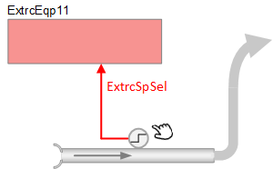

抽取臂，无流量传感器 (ExtrcEqp11)
 | 该应用程序功能监视binary input object(ExtrcSpSel) 激活提取臂。 当 BI 处于活动状态时，将选择第一个配置的设定点值 (ExtrcSp1)。当 BI 处于非活动状态时，选择第二个配置的设定点值 (ExtrcSp2)。 |
Required elements and how to configure them:
元素 | I/O | 信号类型 |
|---|---|---|
ExtrcSpSel "Extraction setpoint selector" | On-board output, Extraction setpoint selector | Binary input |
Function
AF 的功能如上所述。主输出信号是对象 ExtrcPrSp（提取当前设定值）的计算值。

BI Valid
有效性 pin 始终为 True。应用程序永远不会将气流对象设置为无效。
主要特点：
- Binary input monitor for extraction arm activation
- Setpoints for extract airflow, configurable
- Trend for extraction present setpoint
Configuration
 Objects
Objects
描述 | 目的 | 类型 | 默认值 |
|---|---|---|---|
Extraction setpoint 1 | ExtrcSp1 | ACnfVal | 0 |
Extraction setpoint 2 | ExtrcSp2 | ACnfVal | 0 |
Extraction setpoint 3（未使用） | ExtrcSp3 (not used) |
|
|
Interface
界面 | 描述 | 类型 | 参考号 | 拥有者 |
|---|---|---|---|---|
ExtrcSpSel | Extraction setpoint selector | BI | ◉ | Room segment / Field device |
ExtrcPrSp | Extraction present setpoint | ACalcVal | ● | - |
TrndExtrcPrSp | Trend for extraction present setpoint | FtrSel | ● | - |
ExtrcSp1 | Extraction setpoint 1 | ACnfVal | ● | - |
ExtrcSp2 | Extraction setpoint 2 | ACnfVal | ● | - |
ExtrcSp3 (not used) | Extraction setpoint 3（未使用） |
|
|
|